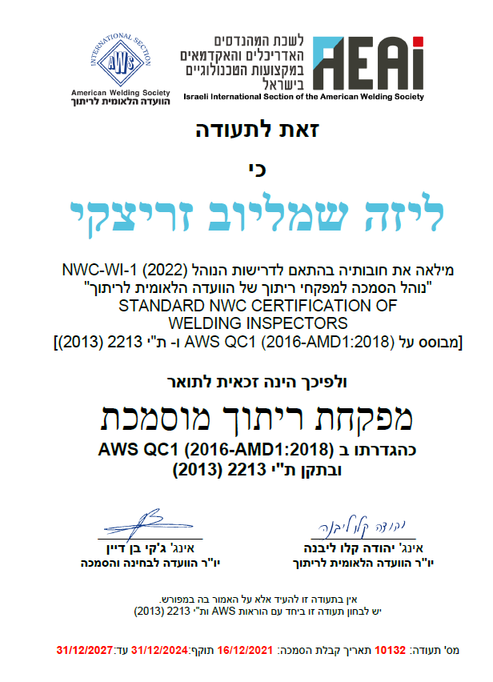
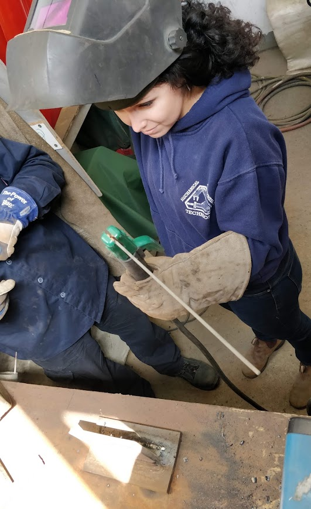
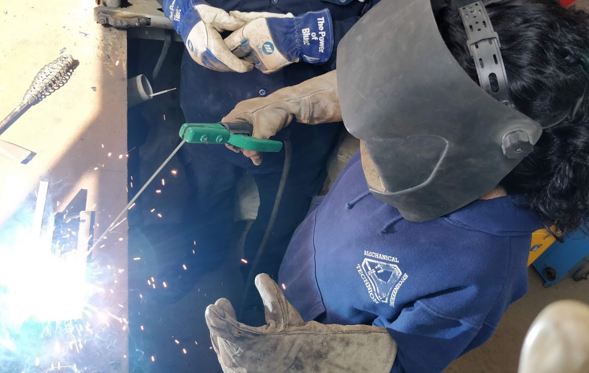

מחקר תזה · הטכניון
ליזה זריצקי
מהנדסת מכונות מפקחת ריתוך חוקרת הדפסת תלת־ממד במתכות
כותרת המחקר
פיתוח תהליך הדפסת חלקי מתכת בתלת־ממד
ליומן המחקר
הסמכה מקצועית Professional certification
AWS · QC1

THESIS RESEARCH · TECHNION
Liza Zaritsky
Mechanical Engineer Welding Inspector 3D Metal Printing Researcher
RESEARCH TITLE
Development of a Process for 3D Printing Metal Parts
View the research log01 יומן מחקר
ניסיתי לרתך.. ריתוך היא עבודת אומנות
סרטונים נוספים מהמחקר יתווספו כאן בהמשך.
01 RESEARCH LOG
I tried welding... Welding is an art.
More research videos will be added here later.

